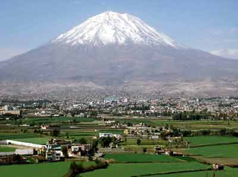

Arequipa es la capital y mayor ciudad del departamento homónimo, es la sede del Tribunal Constitucional y la «Capital Jurídica del Perú. También conocida como la «Ciudad Blanca», es la segunda ciudad del Perú por población, alcanzando el año 2015 los 869 351 habitantes. Su area metropolitana supera el millon de habitantes; según proyecciones del INEI (Instituto Nacional de Estadística e Informática).
La ciudad cuenta con un PIB Nominal de 9.445 millones (USD) y un PIB Per Cápita nominal de 10.277 USD, lo que representa un PIB PPA Per Cápita de 18.610 USD en el periodo 2015, siendo la segunda ciudad con mayor actividad económica en Perú.
Arequipa constituye asimismo un importante centro industrial y comercial del Perú, y es considerada como la segunda ciudad industrial del país. Dentro de su actividad industrial destacan los productos manufacturados y la producción textil de lana de camélidos con calidad de exportación. La ciudad mantiene estrechos vínculos comerciales con Chile, Bolivia y Brasil y con las ciudades conectadas por medio del Ferrocarril del Sur, así como con el puerto de Matarani.
La ciudad fue fundada el 15 de agosto de 1540, bajo la denominación de «Villa Hermosa de Nuestra Señora de la Asunta» en nombre del marqués Francisco Pizarro y el 22 de setiembre de 1541 el monarca Carlos V en Cédula Real ordena que se la llame «Ciudad de Arequipa». En el periodo virreinal adquirió importancia por su sobresaliente papel económico, y se caracteriza por el fidelismo hacia la Corona Española, recibiendo títulos como «Muy Noble y Muy Leal» y el de «Fidelísima» por parte de la corona. En la historia republicana del Perú la ciudad ha sido foco de rebeliones populares, cívicas y democráticas, ha sido también, cuna de sobresalientes figuras intelectuales, políticas y religiosas del país. En la época republicana se le otorga el título de «Heroica ciudad de los libres de Arequipa».
|  |